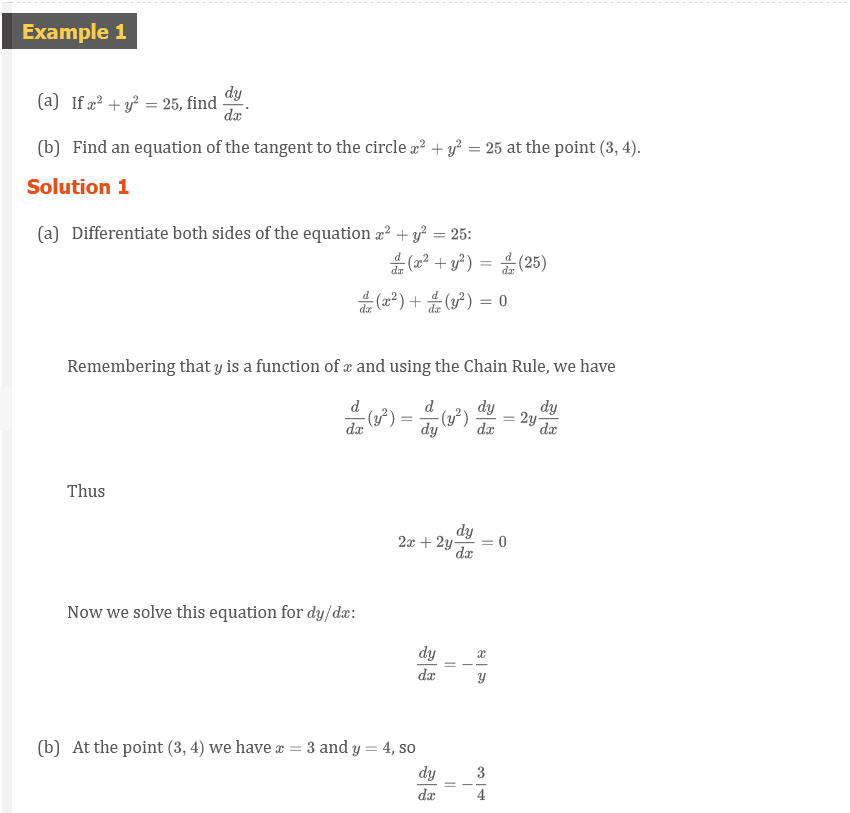
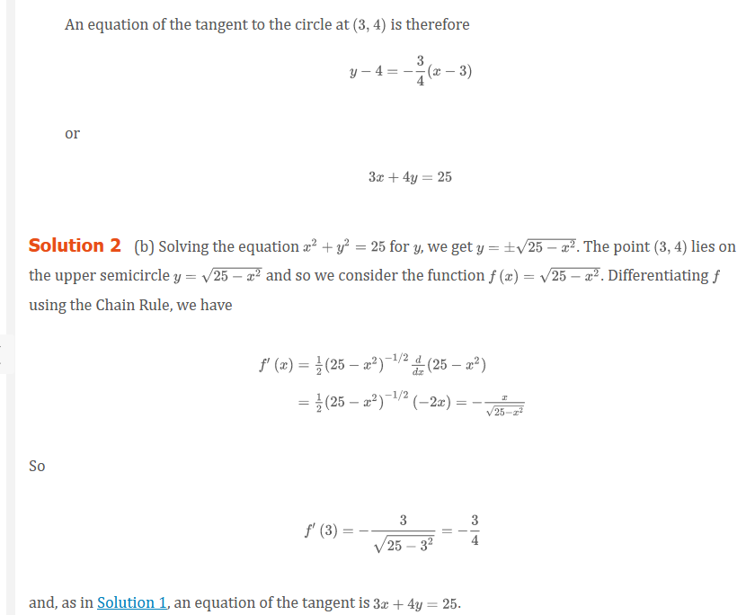
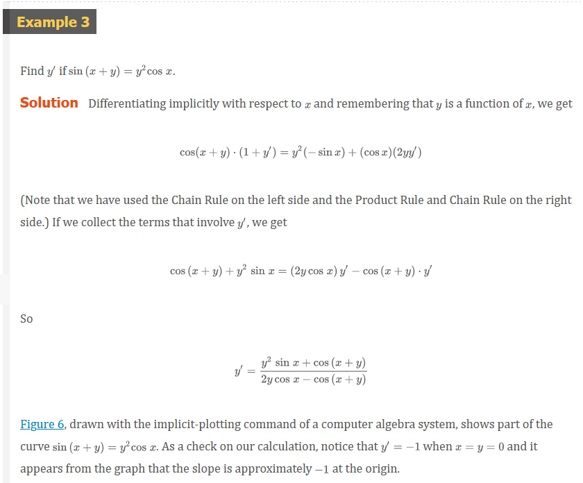
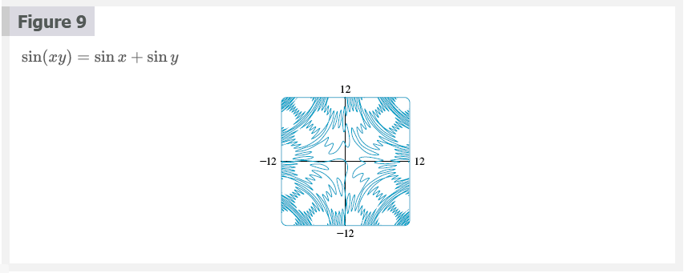
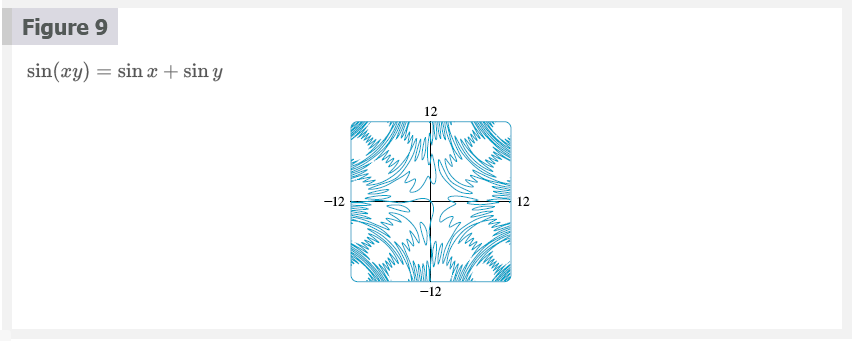
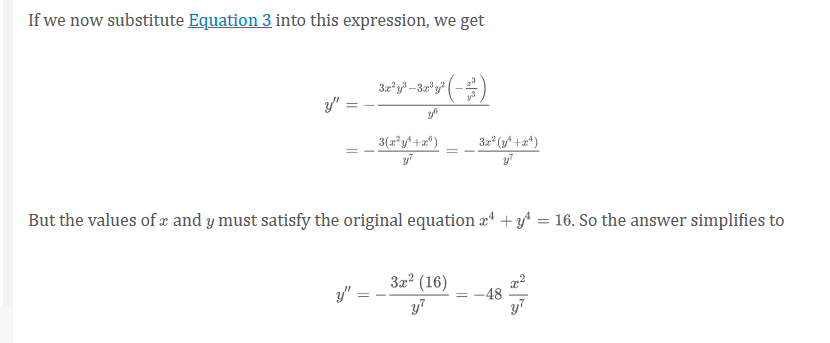
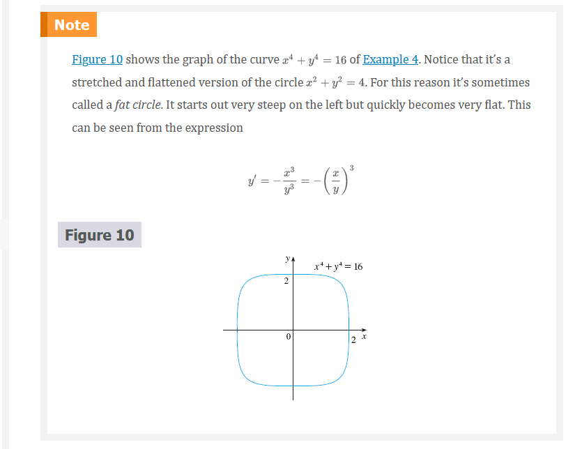
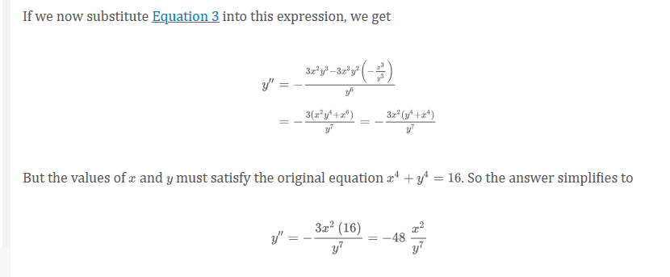
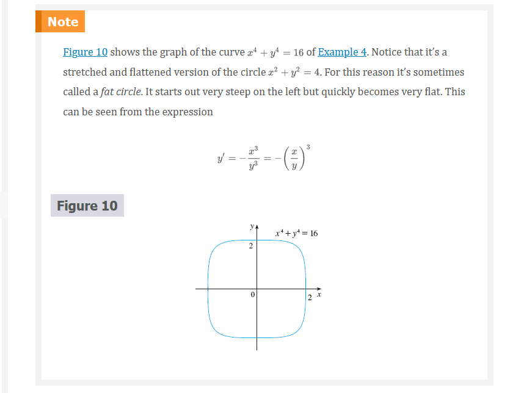

Chapter 3.5: Implicit Differentiation
Some functions are defined implicitly by a relation between x and y such as
Equation 1
x^{2} + y^{2} = 25
or
Equation 2
x^{3} + y^{3} = 6xy
In some cases it is possible to solve such an equation for y as an explicit function (or serveral functions) of x. For instance, if we solve Equation 1 for y, we get y \pm\sqrt{25 - x^{2}}, so two of the functions determinded by the implicit Equation 1 are f(x) = \sqrt{25 - x^{2}} and g(x) = -\sqrt{25 - x^{2}}. The graphs of f and g are the upper and lower semicircles of the circle x^{2} + y^{2} = 25.

It’s not easy to solve Equation 2 for y explicitly as a function of x by hand. Nonetheless, Equation 2 is the equation of a curve called folium of Descartes shown in Figure 2 and it implicitly defines y as several functions of x. The graphs of three such functions are shown in Figure 3. When we say that f is a function implicitly by Equation 2, we mean that the equation
x^{3} + [f(x)]^{3} = 6xf(x)
is true for all values of x in the domain of f.


Fortunately, we don’t need to solve an equation for y in terms of x in order to find the derivative of y. Instead we can use the method of implicit differentiation. This consists of differentiating both sides of the equation with respect to x and then solving the resulting equation for y^{\prime}. In the examples and exercises of this section it is always assumed that the given equation determines y implicitly as a differentiable function of x so that the method of implicit differentiation can be applied.
 
Note 1
The expression dy/dx = -x/y in Solution 1 gives the derivative in terms of both x and y. It is correct no matter which function y is determined by the given equation. For instance, for y = f(x) = \sqrt{25 - x^{2}} we have
\frac{dy}{dx} = -\frac{x}{y} = -\frac{x}{\sqrt{25 - x^{2}}}
wheraas for y = g(x) = -\sqrt{25 - x^{2}} we have
\frac{dy}{dx} = -\frac{x}{y} = -\frac{x}{-\sqrt{25 - x^{2}}} = \frac{x}{\sqrt{25 x^{2}}}


Note 2
There is a formula for the three roots of a cubic equation that is like the quadratic formula but much more complicated. If we use this formula (or a computer algebra system) to solve the equation x^{3} + y^{3} = 6xy for y in terms of x, we get three functions determined by the equation:
y = f(x) = \sqrt[3]{-\frac{1}{2}x^{3} + \sqrt{\frac{1}{4}x^{6} - 8x^{3}}} + \sqrt[3]{-\frac{1}{2}x^{3} - \sqrt{\frac{1}{4}x^{6} - 8x^{3}}}
and
y = \frac{1}{2}\left [ -f(x) \pm \sqrt{-3}\left ( \sqrt[3]{-\frac{1}{2}x^{3} + \sqrt{\frac{1}{4}x^{6} - 8x^{3}}} - \sqrt[3]{-\frac{1}{2}x^{3} - \sqrt{\frac{1}{4}x^{6} - 8x^{3}}} \right ) \right ]
(These are the three functions whose graphs are shown in Figure 3.) You can see that the method of implicit differentiation saves an enormous amount of work in cases such as this. Moreover, implicit differentiation works just as easily for equations such as
y^{5} + 3x^{2}y^{2} + 5x^{4} = 12
for which it is impossible to find a similar expression for y in terms of x.
 
Figures 7, 8, and 9 show three more curves produced by a computer algebra system with an implicit-plotting command. In Exercises 41 and 42 you will have an opportunity to create and examine unusual curves of this nature.
 
   
 
Derivatives of Inverse Trigonometric Functions
Recall the definition of the arcsine function:
y = 2\sin^{(-1 \cdot 4)}{asdf}
means
sin y = x
and
-\frac{\pi}{2} \le y \le \frac{\pi}{2}
Differentiating sin y = x implicitly with respect to x, we obtain
\cos{y}\frac{dy}{dx} = 1
or
\frac{dy}{dx} = \frac{1}{\cos{y}}
Now \cos{y} \ge 0, since -\pi/2 \le y \le \pi/2, so
\cos{y} = \sqrt{1 - \sin^{2}{y}} = \sqrt{1 - x^{2}}
Therefore
\frac{dy}{dx} = \frac{1}{\cos{y}} = \frac{1}{\sqrt{1 - x^{2}}}
\frac{d}{dx}(\sin^{-1}{x}) = \frac{1}{\sqrt{1 - x^{2}}}
The formula for the derivative of the arctangent function is derived in a similar way. If y = \tan^{-1}{x}, then \tan{y} = x. Differentiating this latter equation implicitly with respect to x, we have
\begin{aligned} \sec^{2}{y}\frac{dy}{dx} &= 1 \\ \frac{dy}{dx} &= \frac{1}{\sec^{2}{y}} = \frac{1}{1 + \tan^{2}{y}} = \frac{1}{1 x^{2}} \end{aligned}
\frac{d}{dx}(\tan^{-1}{x}) = \frac{1}{1 + x^{2}}


All Functions
\frac{d}{dx}(\sin^{-1}{x}) = \frac{1}{\sqrt{1 - x^{2}}} \;\;\;\;\;\;\; \frac{d}{dx}(\csc^{-1}{x}) = -\frac{1}{x\sqrt{x^{2} - 1}} \\ \frac{d}{dx}(\cos^{-1}{x}) = -\frac{1}{\sqrt{1 - x^{2}}} \;\;\;\;\;\;\; \frac{d}{dx}(\sec^{-1}{x}) = \frac{1}{x\sqrt{x^{2} - 1}} \\ \frac{d}{dx}(\tan^{-1}{x}) = \frac{1}{1 + x^{2}} \;\;\;\;\;\;\; \frac{d}{dx}(\cot^{-1}{x}) = -\frac{1}{1 + x^{2}}
Abel and Galois
The Norwegian mathematician Niels Abel proved in 1824 that no general formula can be given for the roots of a fifth-degree equation in terms of radicals. Later the French mathematician Evariste Galois proved that it is impossible to find a general formula for the roots of an nth-degree equation (in terms of algebraic operations on the coefficients) if n is any integer larger than 4.
Video Lectures
- 📺 Implicit Differentiation
- 📺 Worked example: Implicit differentiation
- 📺 Worked example: Evaluation derivative with implicit differentiation
- 📺 Showing explicit and implicit differentiation give same result
- 📄 Implicit differentiation review
- 📺 Derivative of inverse sine
- 📺 Derivative of inverse cosine
- 📺 Derivative of inverse tangent
- 📄 Differentiating inverse trig functions review
Resources
- 📺 Implicit Differentiation
- 📺 Worked example: Implicit differentiation
- 📺 Worked example: Evaluation derivative with implicit differentiation
- 📺 Showing explicit and implicit differentiation give same result
- 📄 Implicit differentiation review
- 📺 Derivative of inverse sine
- 📺 Derivative of inverse cosine
- 📺 Derivative of inverse tangent
- 📄 Differentiating inverse trig functions review
Textbook